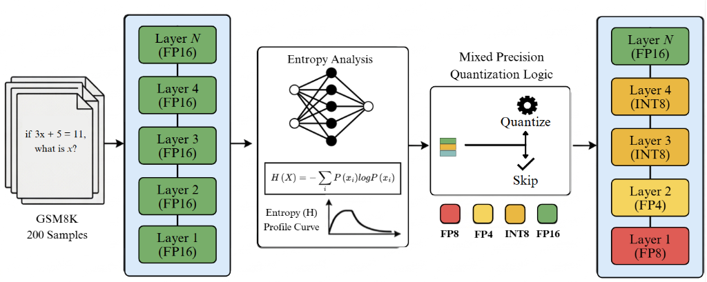
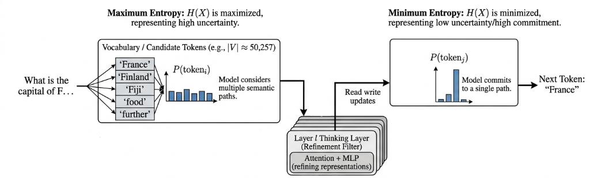
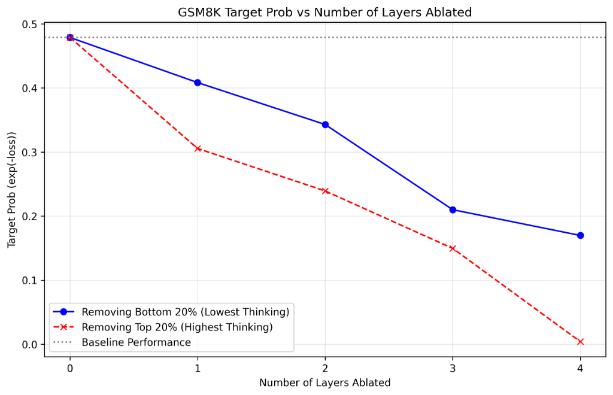
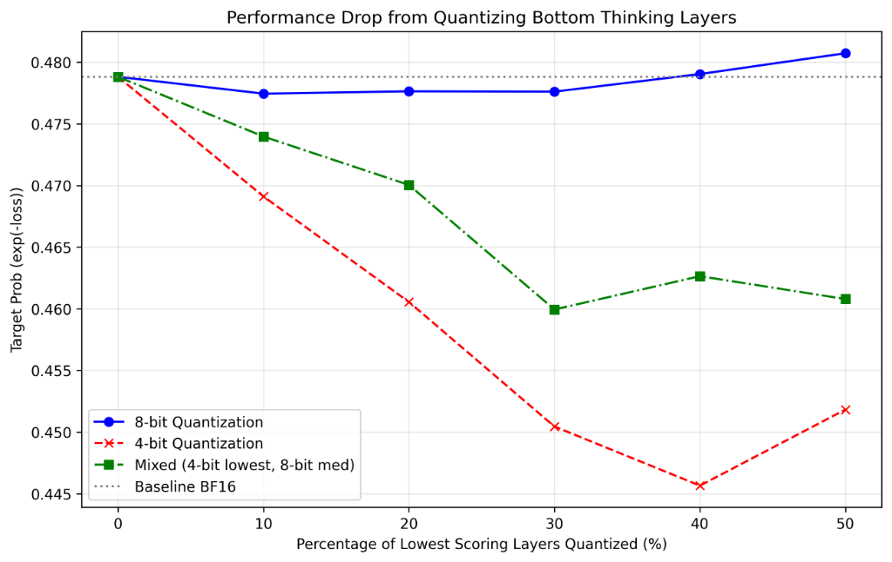
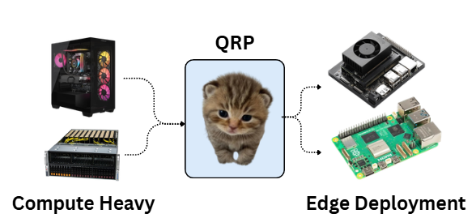

Large Language Models (LLMs) have demonstrated exceptional capabilities in textual inference, but their deployment on edge devices is limited by high computation and memory overhead. To address this, we provide LLM-QRP (Quantization for Reasoning Preservation), a layer-aware mixed-precision quantization framework designed to reduce a model’s size while preserving its reasoning performance.
Unlike uniform post-training quantization methods, LLM-QRP identifies and preserves critical "thinking" layers by analyzing the model’s layer-wise logit evolution and entropy dynamics across transformer blocks. These signals are combined into a unified reasoning importance score, ranking layers according to their inference contribution. Experiments on multiple small models show that LLM-QRP significantly reduces VRAM usage by approximately 50% while maintaining near-baseline reasoning performance, outperforming standard uniform 4-bit quantization.

Figure 1: The LLM-QRP end-to-end framework: From GSM8K input to layer-wise entropy analysis and mixed-precision quantization logic.
LLM-QRP leverages Layer-wise Entropy Profiling to identify critical reasoning bottlenecks. As illustrated below, layers transition from high-entropy uncertainty (semantic exploration) to low-entropy commitment (reasoning convergence). Our "Refinement Filter" concept identifies these convergence points as the most vital layers to preserve in full precision.

We validate our "thinking score" using extensive ablation studies. As shown in Figure 3, removing layers with high reasoning scores leads to a much faster performance collapse compared to redundant layers.


By selectively preserving just 20-30% of the most sensitive layers, we maintain near-BF16 performance while achieving massive VRAM savings.
| Model | VRAM Reduction | Reasoning Retention | Efficiency Gain |
|---|---|---|---|
| SmolLM2-135M | 50.0% | 92.1% | +91.3% |
| Qwen2.5-0.5B | 53.1% | 113.9% | +68.2% |
| LFM2.5-350M | 56.3% | 85.2% | +42.5% |

LLM-QRP acts as the bridge between compute-heavy server infrastructure and low-resource edge devices (Raspberry Pi, Jetson Nano).
@inproceedings{iruku2024llmqrp,
title={Quantization for Reasoning Preservation in Small LLMs},
author={Iruku, Roshan and Dhillon, Gurshaan},
year={2024}
}